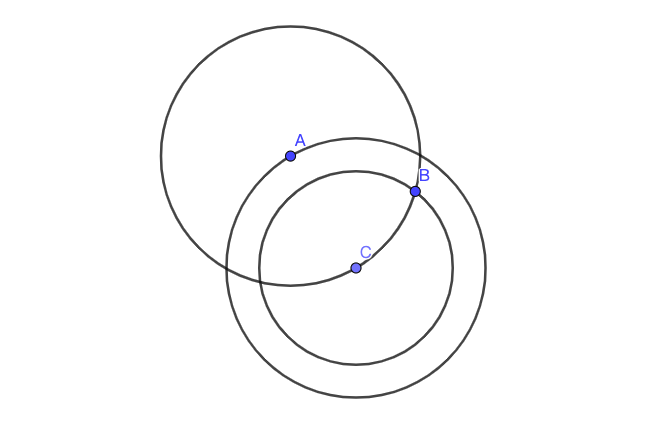

{% for category in site.categories %}
{% endfor %}
{{ category.first }}
-
{% for post in category.last limit:5 %}
-
{{ post.date | date:"%Y-%m-%d"}}
{% endfor %}
综合文章
-
程序人生
Windows 10将会让搜索和使用信息更加简单，包括本地、网络和互联网搜索功能,直观的用户体验将更 加高级,还会整合自动化应用程序提交和交叉程序数据透明性。 Windows 10 操作系统改进了基于角色的计算方案和用户账户管理,在数据保护和坚固协作的固有冲突之方案和用户账户管理,在数据保护和坚固协作的固有冲间搭建沟通桥梁,同时也会开启企业级的数据保护和权
{% include info.html %}
 最新文章
博客信息
最新文章
博客信息
-
{% for post in paginator.posts limit:10 %}
- {{ post.title}} {{ post.date | date:"%Y-%m-%d"}} {% endfor %}
博客站点更多信息请查看关于博客